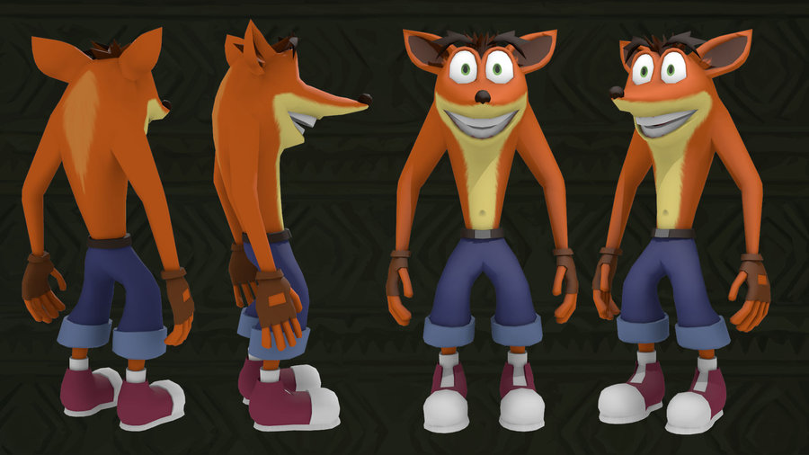

Halo es una franquicia de videojuegos de ciencia ficción formada por 10 videojuegos actualmente, con otro en desarrollo (Halo Xbox One o Halo 5: Guardians) creada por Bungie hasta Halo: Reach, gestionada ahora por 343 Industries y es propiedad de Microsoft Studios.
En el pasado distante, una raza de muy avanzada tecnología, conocida como Forerunner, luchó contra una especie parásita llamada Flood. Esta, que se propagaba mediante la infestación de otras formas de vida,
| 1 | 2 | 3 | 4 | ||||
|---|---|---|---|---|---|---|---|
| 5 | 6 | 7 | 8 | ||||
| 9 | 10 | 11 | 12 |